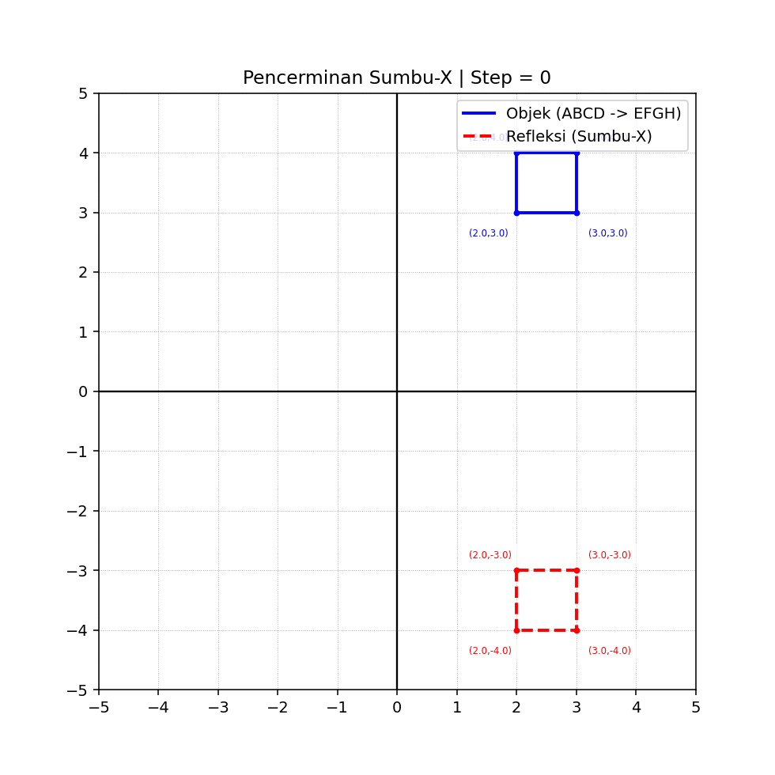

Transformasi Geometri: Pencerminan Sumbu-X#
Halaman ini mendemonstrasikan simulasi transformasi geometri berupa pencerminan (refleksi) terhadap Sumbu-X yang digabungkan dengan pergeseran (translasi) turun secara vertikal.
1. Animasi Simulasi (\(ABCD \rightarrow EFGH\))#
Berikut adalah hasil visualisasi animasi bergerak dari pergerakan objek asli (Biru) yang bergerak turun dari koordinat awal \(ABCD\) menuju \(EFGH\), diikuti oleh bayangannya (Merah) yang bergerak naik secara simetris di bawah cermin Sumbu-X:

2. Kode Python (Source Code)#
Gunakan kode Python berikut di VS Code Anda untuk menghasilkan file animasi.gif di atas:
import os
import numpy as np
import matplotlib.pyplot as plt
from matplotlib.animation import FuncAnimation
# ==========================================
# OBJEK AWAL (ABCD) - Urutan memutar searah jarum jam
# ==========================================
objek = np.array([
[2, 3],
[2, 4],
[3, 4],
[3, 3],
[2, 3]
])
# ==========================================
# TRANSFORMASI (Pencerminan terhadap Sumbu-X)
# ==========================================
R = np.array([
[1, 0],
[0, -1]
])
def T(tx, ty):
return np.array([
[1, 0, tx],
[0, 1, ty],
[0, 0, 1]
])
def ke_homogen(obj):
return np.hstack((obj, np.ones((obj.shape[0], 1))))
def ke_cartesian(obj):
return obj[:, :2]
# ==========================================
# LABEL KOORDINAT
# ==========================================
def gambar_label(points, warna, arah):
if arah == 'atas':
offsets = [
(-0.8, -0.4), # A
(-0.8, 0.2), # B
(0.2, 0.2), # C
(0.2, -0.4) # D
]
else: # Untuk bayangan di bawah sumbu-X
offsets = [
(-0.8, 0.2),
(-0.8, -0.4),
(0.2, -0.4),
(0.2, 0.2)
]
for i, (x, y) in enumerate(points[:-1]):
dx, dy = offsets[i % 4]
ax.plot(x, y, 'o', color=warna, markersize=3)
ax.text(
x + dx, y + dy,
f"({x:.1f},{y:.1f})",
fontsize=6,
color=warna,
bbox=dict(facecolor='white', alpha=0.7, edgecolor='none')
)
# ==========================================
# SETUP PLOT
# ==========================================
plt.rcParams['figure.dpi'] = 140
fig, ax = plt.subplots(figsize=(7, 7))
total_frames = 15
max_translation = -2.0 # Bergerak turun sejauh 2 satuan (dari y=3 ke y=1)
def update(frame):
ax.clear()
# Grid & Limit Canvas
ax.set_xlim(-5, 5)
ax.set_ylim(-5, 5)
ax.set_aspect('equal')
# Sumbu utama
ax.axhline(0, color='black', linewidth=1.2)
ax.axvline(0, color='black', linewidth=1.2)
# Grid rapat berurutan
ax.set_xticks(np.arange(-5, 6, 1))
ax.set_yticks(np.arange(-5, 6, 1))
ax.grid(True, linewidth=0.5, linestyle=':')
# PROSES GERAK (TRANSLASI & REFLEKSI)
ty = (frame / (total_frames - 1)) * max_translation
obj_h = ke_homogen(objek)
# 1. Objek Asli: Turun Vertikal (ABCD -> EFGH)
asli = (T(0, ty) @ obj_h.T).T
asli = ke_cartesian(asli)
# 2. Refleksi Awal di Sumbu-X
refleksi_awal = (R @ objek.T).T
refleksi_h = ke_homogen(refleksi_awal)
# 3. Gerak Bayangan: Naik Vertikal (arahnya berlawanan)
refleksi = (T(0, -ty) @ refleksi_h.T).T
refleksi = ke_cartesian(refleksi)
# Gambar Garis Objek & Bayangan
ax.plot(asli[:, 0], asli[:, 1], 'b-', linewidth=2, label='Objek (ABCD -> EFGH)')
ax.plot(refleksi[:, 0], refleksi[:, 1], 'r--', linewidth=2, label='Refleksi (Sumbu-X)')
# Berikan Label Koordinat dinamis
gambar_label(asli, 'blue', 'atas')
gambar_label(refleksi, 'red', 'bawah')
ax.legend(loc='upper right')
ax.set_title(f"Pencerminan Sumbu-X | Step = {frame}")
# Membuat dan Menyimpan Animasi langsung menjadi GIF
anim = FuncAnimation(fig, update, frames=total_frames, interval=300, repeat=True)
output_filename = 'animasi.gif'
anim.save(output_filename, writer='pillow', fps=3)
Penjelasan Pengerjaan Transformasi Matriks 2D#
Proses pergeseran (translasi) dan pencerminan (refleksi) pada simulasi ini diselesaikan secara matematis menggunakan Sistem Koordinat Homogen 3D agar semua operasi transformasi dapat dihitung melalui perkalian matriks linier.
Koordinat Kartesian 2D [x, y] dikonversi menjadi koordinat homogen [x, y, 1].
1. Transformasi Objek Asli#
A = (-0.8, -0.4)
B = (-0.8, 0.2),
C = (0.2, 0.2),
D = (0.2, -0.4)
Objek asli bergerak turun secara vertikal dari posisi awal ABCD ke posisi akhir EFGH.
Pergerakan ini merupakan translasi pada sumbu-Y sebesar (t_y), sedangkan sumbu-X tidak mengalami pergeseran (t_x = 0).
A. Matriks Translasi Homogen (T)#
B. Contoh Perhitungan Titik A(2,3) menjadi E(2,1)#
Diketahui translasi vertikal:
Maka:
Perkalian baris × kolom:
Sehingga diperoleh koordinat akhir:
2. Transformasi Objek Bayangan (Refleksi Sumbu-X)#
Bayangan objek harus selalu simetris terhadap sumbu-X ((y = 0)).
Transformasi bayangan dilakukan melalui dua tahap:
Refleksi terhadap sumbu-X
Translasi berlawanan arah
A. Tahap 1: Refleksi Posisi Awal#
Matriks refleksi terhadap sumbu-X:
Untuk titik awal (A(2,3)):
Hasil perkalian:
Diperoleh titik bayangan awal:
B. Tahap 2: Translasi Berlawanan Arah#
Ketika objek asli bergerak turun sebesar (t_y), maka bayangan bergerak naik sebesar (-t_y) agar tetap simetris terhadap sumbu-X.
Jika objek asli mengalami translasi:
Maka translasi bayangan:
Perhitungan titik bayangan akhir:
Perkalian baris × kolom:
Sehingga diperoleh koordinat bayangan akhir:
Posisi (E’(2,-1)) merupakan bayangan simetris dari titik (E(2,1)) terhadap sumbu-X.